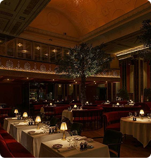
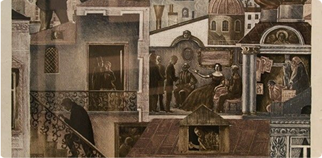
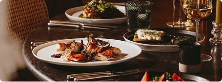
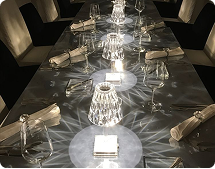
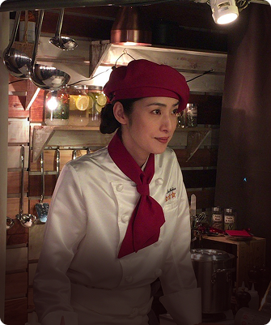
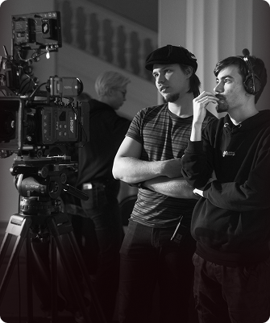

«Эпоха» представляет собой иммерсивное пространство, в котором история и мифология используются как основа сценариев, а гастрономия выступает инструментом художественного высказывания
Гастроспектакль - это театрализованный ужин, где история Петербурга становится сценарием, а гость - соучастником действия.
Погружение происходит через вкус, свет, звук и тактильные ощущения. Каждое блюдо - артефакт эпохи
Спектакль длится 2,5–3 часа, включает 5–7 подач и рассчитан не более чем на 25 гостей за сеанс. Меню обновляется каждые три месяца, подстраиваясь под сезон и культурные события.
Итогом вечера становится цифровая «афиша-воспоминание», а сам гастроспектакль превращает еду в искусство, а зрителя - в героя пьесы, которая никогда не повторяется дважды.






С помощью ощущений создается эффект живого присутствия в историческом событии. Вы не смотрите — вы живёте внутри.
25 гостей за один сеанс. Никакой массовости — только вы, действие и атмосфера, где каждый становится соучастником, а не зрителем.
Меню и сюжет меняется каждые 3 месяца, следуя за календарём и культурными событиями. Каждый визит в «Эпоху» уникален.
В конце вы получаете «афишу-воспоминание» - персональный сувенир, который сохранит воспоминание о пережитой истории.
Телефон:
+7 (937) 734 77 55
Эл. почта:
epoha2023@gmail.ru
Адрес:
Невский проспект д. 54
Режим работы:
9:00 – 23:00